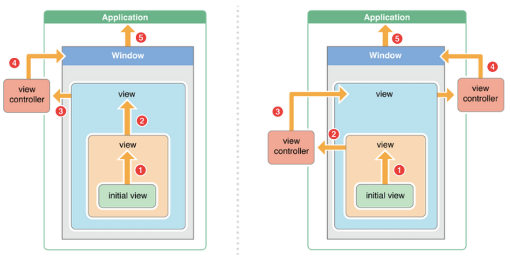
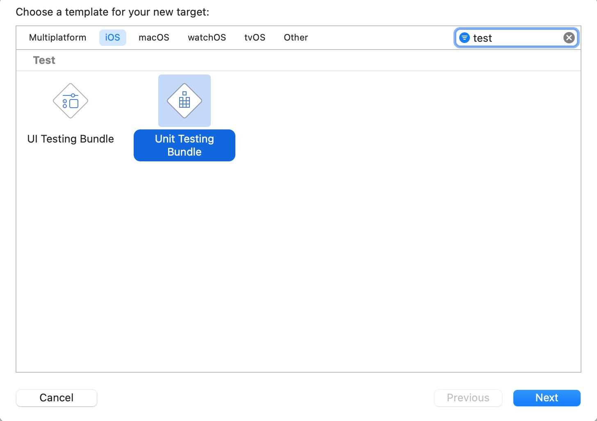
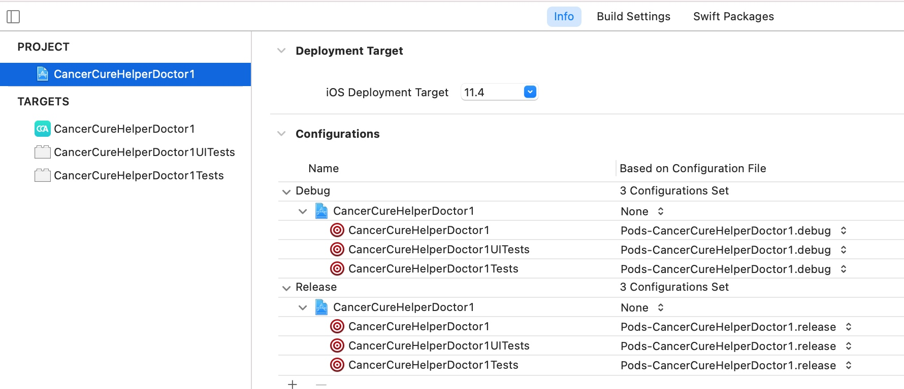
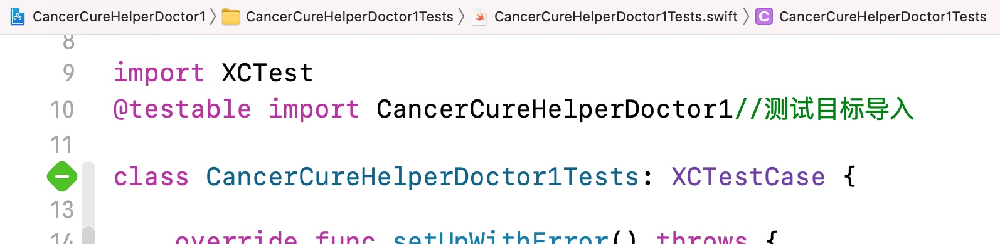
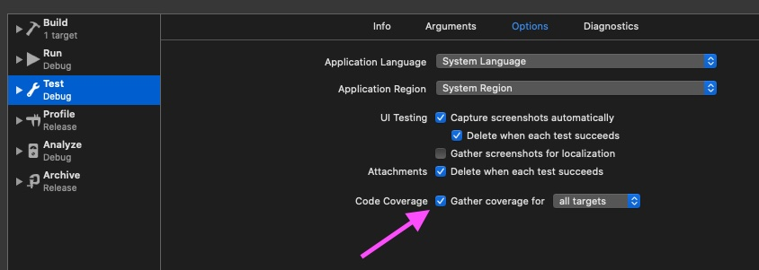
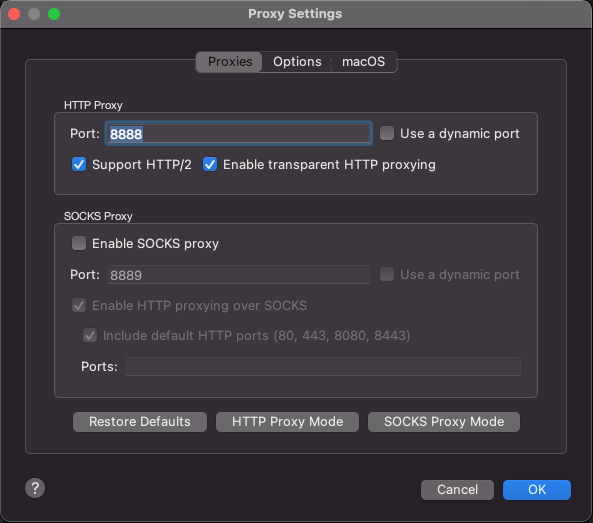
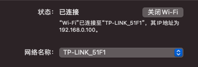
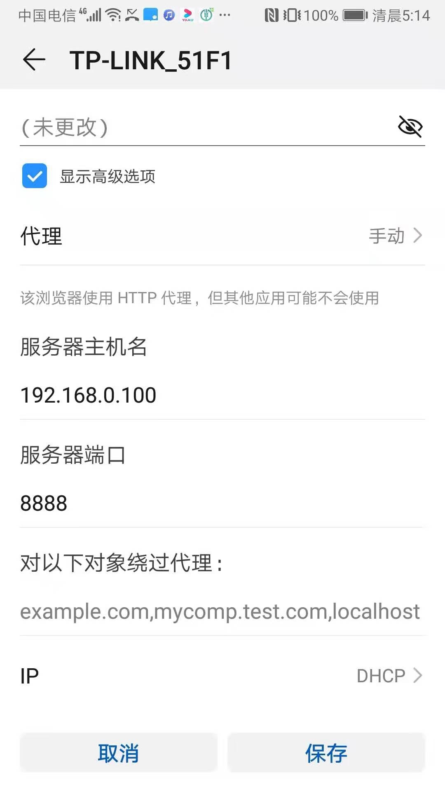
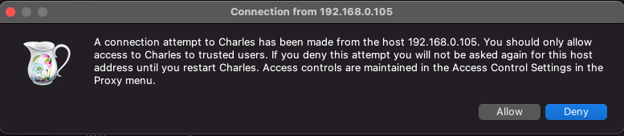
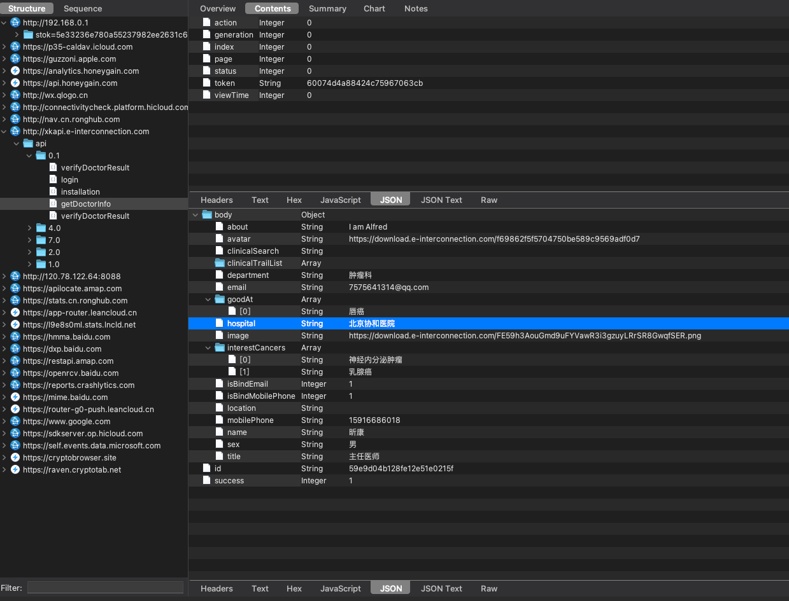

检查工程中的 UIWebView
grep -r UIWebView .
注意最后有个点号，而且点号和 UIWebView 之间必须有一个空格。
会马上出现工程中带有 UIWebView 的文件的列表（包括在工程中无法搜索到的 .a 文件中对UIWebView 的引用）。
iOS开发找不到Libstdc-.6.0.9-files
该项目用于Xcode 11+ 不支持使用lbstdc++插件报错异常解决方案
类似这种报错Info: Error: ld: library not found for "-lstdc++.6"
Usage
根据调试方式不同，真机和模拟器文件放置路径存在差异，分别复制对应的Lib文件到下面的路径即可解决Xcode编译报错
For Device
Put tbd copy to the path:
1 | /Applications/Xcode.app/Contents/Developer/Platforms/iPhoneOS.platform/Developer/SDKs/iPhoneOS.sdk/usr/lib/ |
For Simulator
Put dylib copy to the path:
1 | /Applications/Xcode.app/Contents/Developer/Platforms/iPhoneOS.platform/Library/Developer/CoreSimulator/Profiles/Runtimes/iOS.simruntime/Contents/Resources/RuntimeRoot/usr/lib |
Put tdb copy to the path:
1 | /Applications/Xcode.app/Contents/Developer/Platforms/iPhoneSimulator.platform/Developer/SDKs/iPhoneSimulator.sdk/usr/lib/ |
Download
直接 Clone or Download Zip 进行文件下载
也可以点击这里进行文件下载
上传应用到苹果一直卡住验证中（authentication with the app store）问题解决
1 | cd ~ |
执行完成后注意缓存文件检查是否都下载了。
/Users/your_user_name/Library/Caches/com.apple.amp.itmstransporter/
framework无法打包成ipa
Xcode->Build settings->Signing->Code Signing Identity: Any SDK
Xcode->Build settings->Signing->Code Signing Style: Automatic
参考frame打包库
调整iOS的statusbar的颜色
只需要改变控制器的view的背景颜色!!!
OC基础
#import 跟#include、@class有什么区别？＃import<> 跟 #import””又什么区别？
1.#import和#include都能完整地包含某个文件的内容，#import能防止同一个文件被包含多次
2.@class仅仅是声明一个类名，并不会包含类的完整声明;@class还能解决循环包含的问题
3.#import <> 用来包含系统自带的文件，#import “”用来包含自定义的文件
属性readwrite，readonly，assign，retain，copy，nonatomic 各是什么作用，在那种情况下用？
1.readwrite：同时生成get方法和set方法的声明和实现
2.readonly：只生成get方法的声明和实现
3.assign：set方法的实现是直接赋值，用于基本数据类型
4.retain：set方法的实现是release旧值，retain新值，用于OC对象类型
5.copy：set方法的实现是release旧值，copy新值，用于NSString、block等类型
6.nonatomic：非原子性，set方法的实现不加锁（比atomic性能高）
属性修饰符的本质？
assign 修饰符 没有做任何操作,本质就是得到内存空间,直接赋值
copy 修饰符 编译器为你调用了 objc_setProperty_nonatomic_copy, 幸运的是它确实就是 runtime 中的源码
strong 修饰符下,编译器为你调用了 objc_storeStrong 函数, 它也是一个 runtime 源码中的函数
weak 修饰符下,编译器为你调用了 objc_storeWeak 函数, 它也是一个 runtime 源码中的函数
Objective-C如何对内存管理的,说说你的看法和解决方法?
1.每个对象都有一个引用计数器，每个新对象的计数器是1，当对象的计数器减为0时，就会被销毁
2.通过retain可以让对象的计数器+1、release可以让对象的计数器-1
3.还可以通过autorelease pool管理内存
4.如果用ARC，编译器会自动生成管理内存的代码
static的作用？
1.static修饰的函数是一个内部函数，只能在本文件中调用，其他文件不能调用
2.static修饰的全部变量是一个内部变量，只能在本文件中使用，其他文件不能使用
3.static修饰的局部变量只会初始化一次，并且在程序退出时才会回收内存
线程和进程的区别？
1.一个应用程序对应一个进程，一个进程帮助程序占据一块存储空间
2.要想在进程中执行任务，就必须开启线程，一条线程就代表一个任务
3.一个进程中允许开启多条线程，也就是同时执行多个任务
堆和栈的区别？
1.堆空间的内存是动态分配的，一般存放对象，并且需要手动释放内存
2.栈空间的内存由系统自动分配，一般存放局部变量等，不需要手动管理内存
谈谈常用的数据存储方法?
1.属性列表
2.Preference（NSUserDefaults）
3.键值归档（NSKeyedArchiver、NSCoding）
4.SQLite数据库
5.Core Data
深浅拷贝的区别是什么?
1.浅拷贝：指针（地址）拷贝，不会产生新对象
2.深拷贝：内容拷贝，会产生新对象
KVO与KVC是什么?
1.KVC是键值编码，可以通过一个字符串的key（属性名）修改对象的属性值
2.KVO是键值监听，可以监听一个对象属性值的改变
delegates的有用途是啥?
1.两个对象之间传递数据和消息
2.解耦，拆分业务逻辑
代理和通知有啥区别?
1.通过NSNotification可以给多个对象传递数据和消息
2.通过protocol（代理模式）只能给一个对象传递数据和消息
推送是什么?
1.本地推送：程序内部弹出通知到用户设备
2.远程推送：由推送服务器推送通知到用户设备
什么是单例?
1.单例：保证程序运行过程中，永远只有一个对象实例
2.目的：全局共享一份资源、节省不必要的内存开销
frame与bounds有什么不同?
1.frame以父控件的左上角为坐标原点
2.bounds以控件本身的左上角为坐标原点
Object-C有多继承吗？没有的话用什么代替？
1.OC是单继承，没有多继承
2.有时可以用分类和协议来代替多继承
tableView的重用机制？
简述：将离开屏幕的cell放到缓存池，重新拿来显示到屏幕的其他位
怎么理解MVC，在Cocoa中MVC是怎么实现的？有了解过MVVM么,和MVC有什么差别?
1.M：Model，模型，封装数据
2.V：View，视图界面，负责展示数据
3.C：Controller，控制器，负责提供数据（Model）给界面（View）
self.跟self->什么区别？
1.self.是调用get方法或者set放
2.self是当前本身，是一个指向当前对象的指针
3.self->是直接访问成员变量
weak和assign的区别？
1.修饰变量类型的区别
weak 只可以修饰对象。如果修饰基本数据类型，编译器会报错-“Property with ‘weak’ attribute must be of object type”。
assign 可修饰对象，和基本数据类型。当需要修饰对象类型时，MRC时代使用unsafe_unretained。当然，unsafe_unretained也可能产生野指针，所以它名字是”unsafe_”。
2.是否产生野指针的区别
weak 不会产生野指针问题。因为weak修饰的对象释放后（引用计数器值为0），指针会自动被置nil，之后再向该对象发消息也不会崩溃。 weak是安全的。
assign 如果修饰对象，会产生野指针问题；如果修饰基本数据类型则是安全的。修饰的对象释放后，指针不会自动被置空，此时向对象发消息会崩溃。
strong 与copy的区别
strong 与copy都会使引用计数加1，但strong是两个指针指向同一个内存地址，copy会在内存里拷贝一份对象，两个指针指向不同的内存地址
线程问题？
Pthreads ：在类Unix操作系统（Unix、Linux、Mac OS X等）中，都使用Pthreads作为操作系统的线程。
NSThread：这套方案是经过苹果封装后的，并且完全面向对象的。所以你可以直接操控线程对象，非常直观和方便。
GCD：Grand Central Dispatch，它是苹果为多核的并行运算提出的解决方案，所以会自动合理地利用更多的CPU内核（比如双核、四核），最重要的是它会自动管理线程的生命周期（创建线程、调度任务、销毁线程），完全不需要我们管理，我们只需要告诉干什么就行
dispatch queue是一个工作队列，其背后是一个全局的线程池GCD Thread Pool。dispatch queue的真髓：能串行、能并行、能同步、能异步以及共享同一个线程池。
GCD exposes five different queues
NSOperation & NSOperationQueue：Operation queues are a Cocoa abstraction of the queue model exposed by GCD. While GCD offers more low-level control, operation queues implement several convenient features on top of it, which often makes it the best and safest choice for application developers. 大家可以看到 NSOperation 和 NSOperationQueue 分别对应 GCD 的 任务 和 队列 。操作步骤也很好理解
什么是OC链式语法？
Pod入BlocksKit用处：
1 通过block传入事件处理函数
2 创建动态代理，传入block给想要实现的方法。
3 在很多基础的类上增加额外的方法。
BlocksKit把很多系统的delegate，方法等 翻新成block 了，对与UIKit 类的，还是比较方便使用的。对于喜欢block的可以考虑试试。（注tableView 这样大个的 delegate 还是算了把骚年）
[button bk_addEventHandler:^(id sender) {
// do something
} forControlEvents:UIControlEventTouchUpInside];
masonry里面自动布局使用的.top().bottom();就是链式语法
(BaseViewController *(^)())stepOne;
实现方法：
(BaseViewController *(^)())stepOne{
return ^(){
NSLog(@”do”);
return self;
};
}；
会有空指针的坑
typedef void (^block)(void);
int main() {
block b = NULL;
b(); //闪退
}
CALayer 和 UIView的区别？
1 每个 UIView 内部都有一个 CALayer 在背后提供内容的绘制和显示，并且 UIView 的尺寸样式都由内部的 Layer 所提供。两者都有树状层级结构，layer 内部有 SubLayers，View 内部有 SubViews.但是 Layer 比 View 多了个AnchorPoint
2 在 View显示的时候，UIView 做为 Layer 的 CALayerDelegate,View 的显示内容由内部的 CALayer 的 display
3 CALayer 是默认修改属性支持隐式动画的，在给 UIView 的 Layer 做动画的时候，View 作为 Layer 的代理，Layer 通过 actionForLayer:forKey:向 View请求相应的 action(动画行为)
4 layer 内部维护着三分 layer tree,分别是 presentLayer Tree(动画树),modeLayer Tree(模型树), Render Tree (渲染树),在做 iOS动画的时候，我们修改动画的属性，在动画的其实是 Layer 的 presentLayer的属性值,而最终展示在界面上的其实是提供 View的modelLayer
5 两者最明显的区别是 View可以接受并处理事件，而 Layer 不可以。
#Swift基础
oc如何调用swift？
答：Appdelegate:
#import “MMFinancialSchool-Swift.h”
let 和Var 的区别？
答：常量和变量，let 常量可以替代OC的宏
字符串如何表达输出变量？
答：”\（变量）”
String（变量）
V字符串值的字典如何表达？
答：[“key1”:”value1”, “key2”:”value2”,…..]
初始化空字典String:String 或 Dictionary
清空字典[:]
V字符串数组表达？
答：[“string1”,”string2”,….]
初始化空数组：String, 或 Array
什么是可选值？链式可选值的作用？
答：可选值是可以为空或为Some的枚举类型。特点是可以nil初始化
可选值链式用来忽略属性为nil的情况的缩写语法。
描述变量的计算属性的作用？属性监视器的作用？
答：变量带get ,set 的方法可以读写 可以放在 = 运算符的两边
只带get 方法是只读 ，只能放在 = 运算符右侧
willSet 方法变化之前调用didSet方法在变化后调用，属性监视器用来改变属性后更新UI
- enum ServerResponse {
- case result(String, String)
- case failure(String)
- }
上面的String是指什么？
答：联系值，用于传参
类扩展的作用是什么？
答：使用extension 关键字。用于增加class，structure，enum，的里方法和计算属性。且它不能带存储属性。
IPhoneX的安全区？
答：回答上横竖屏分别在那个区即可。使用边框约束。
自由思考题：考察公司APP的某些效果说思路。
Flutter基础
Flutter是Google推出的一套开源跨平台UI框架，可以快速地在Android、iOS和Web平台上构建高质量的原生用户界面。在过去的一年里，Flutter的更新频率是相当的快，也有很多的公司开始使用它来进行跨平台应用开发，可以说，将Flutter称为2019年最流行的跨平台技术也不为过。
在研究了Hybrid APP、React Native和Weex等技术之后，为在今年的早些时候也入了Flutter的坑。总的来说，不管是从社群和社区的活跃来看，还是从技术的水准上来看，Flutter无疑是最优秀的，特别是Google将Flutter列为重点推广项目之后，全世界掀起了一股学习Flutter的热潮。
在国内，除了阿里、腾讯、美团等大厂外，国内很多的中小团队也开始使用Flutter来作为移动应用开发的首选，并且很多公司在移动招聘方面也要求具有Flutter开发的背景。Flutter 的面试题主要分为两个Dart和Flutter部分，下面是一些常见的面试题。
Dart
Dart 当中的 「..」表示什么意思？
Dart 当中的 「..」意思是 「级联操作符」，为了方便配置而使用。「..」和「.」不同的是 调用「..」后返回的相当于是 this，而「.」返回的则是该方法返回的值 。Dart 的作用域
Dart 没有 「public」「private」等关键字，默认就是公开的，私有变量使用 下划线 _开头。Dart 是不是单线程模型？是如何运行的？
Dart 是单线程模型，运行的的流程如下图。
简单来说，Dart 在单线程中是以消息循环机制来运行的，包含两个任务队列，一个是“微任务队列” microtask queue，另一个叫做“事件队列” event queue。
当Flutter应用启动后，消息循环机制便启动了。首先会按照先进先出的顺序逐个执行微任务队列中的任务，当所有微任务队列执行完后便开始执行事件队列中的任务，事件任务执行完毕后再去执行微任务，如此循环往复，生生不息。
- Dart 是如何实现多任务并行的？
前面说过， Dart 是单线程的，不存在多线程，那如何进行多任务并行的呢？其实，Dart的多线程和前端的多线程有很多的相似之处。Flutter的多线程主要依赖Dart的并发编程、异步和事件驱动机制。
简单的说，在Dart中，一个Isolate对象其实就是一个isolate执行环境的引用，一般来说我们都是通过当前的isolate去控制其他的isolate完成彼此之间的交互，而当我们想要创建一个新的Isolate可以使用Isolate.spawn方法获取返回的一个新的isolate对象，两个isolate之间使用SendPort相互发送消息，而isolate中也存在了一个与之对应的ReceivePort接受消息用来处理，但是我们需要注意的是，ReceivePort和SendPort在每个isolate都有一对，只有同一个isolate中的ReceivePort才能接受到当前类的SendPort发送的消息并且处理。
- 说一下Dart异步编程中的 Future关键字？
前面说过，Dart 在单线程中是以消息循环机制来运行的，其中包含两个任务队列，一个是“微任务队列” microtask queue，另一个叫做“事件队列” event queue。
在Java并发编程开发中，经常会使用Future来处理异步或者延迟处理任务等操作。而在Dart中，执行一个异步任务同样也可以使用Future来处理。在 Dart 的每一个 Isolate 当中，执行的优先级为 ：Main > MicroTask > EventQueue。
说一下Dart异步编程中的 Stream数据流？
在Dart中，Stream 和 Future 一样，都是用来处理异步编程的工具。它们的区别在于，Stream 可以接收多个异步结果，而Future 只有一个。
Stream 的创建可以使用 Stream.fromFuture，也可以使用 StreamController 来创建和控制。还有一个注意点是：普通的 Stream 只可以有一个订阅者，如果想要多订阅的话，要使用 asBroadcastStream()。Stream 有哪两种订阅模式？分别是怎么调用的？
Stream有两种订阅模式：单订阅(single) 和 多订阅（broadcast）。单订阅就是只能有一个订阅者，而广播是可以有多个订阅者。这就有点类似于消息服务（Message Service）的处理模式。单订阅类似于点对点，在订阅者出现之前会持有数据，在订阅者出现之后就才转交给它。而广播类似于发布订阅模式，可以同时有多个订阅者，当有数据时就会传递给所有的订阅者，而不管当前是否已有订阅者存在。
Stream 默认处于单订阅模式，所以同一个 stream 上的 listen 和其它大多数方法只能调用一次，调用第二次就会报错。但 Stream 可以通过 transform() 方法（返回另一个 Stream）进行连续调用。通过 Stream.asBroadcastStream() 可以将一个单订阅模式的 Stream 转换成一个多订阅模式的 Stream，isBroadcast 属性可以判断当前 Stream 所处的模式。
- await for 如何使用？
await for是不断获取stream流中的数据，然后执行循环体中的操作。它一般用在直到stream什么时候完成，并且必须等待传递完成之后才能使用，不然就会一直阻塞。
Stream
main() async{
await for(String s in stream){
print(s);
}
}
9. 说一下 mixin机制？
mixin 是Dart 2.1 加入的特性，以前版本通常使用abstract class代替。简单来说，mixin是为了解决继承方面的问题而引入的机制，Dart为了支持多重继承，引入了mixin关键字，它最大的特殊处在于：mixin定义的类不能有构造方法，这样可以避免继承多个类而产生的父类构造方法冲突。
mixins的对象是类，mixins绝不是继承，也不是接口，而是一种全新的特性，可以mixins多个类，mixins的使用需要满足一定条件。
可以参考Flutter基础知识之Dart语音基础
Flutter
- 请简单介绍下Flutter框架，以及它的优缺点？
Flutter是Google推出的一套开源跨平台UI框架，可以快速地在Android、iOS和Web平台上构建高质量的原生用户界面。同时，Flutter还是Google新研发的Fuchsia操作系统的默认开发套件。在全世界，Flutter正在被越来越多的开发者和组织使用，并且Flutter是完全免费、开源的。Flutter采用现代响应式框架构建，其中心思想是使用组件来构建应用的UI。当组件的状态发生改变时，组件会重构它的描述，Flutter会对比之前的描述，以确定底层渲染树从当前状态转换到下一个状态所需要的最小更改。
优点
热重载（Hot Reload），利用Android Studio直接一个ctrl+s就可以保存并重载，模拟器立马就可以看见效果，相比原生冗长的编译过程强很多；
一切皆为Widget的理念，对于Flutter来说，手机应用里的所有东西都是Widget，通过可组合的空间集合、丰富的动画库以及分层课扩展的架构实现了富有感染力的灵活界面设计；
借助可移植的GPU加速的渲染引擎以及高性能本地代码运行时以达到跨平台设备的高质量用户体验。简单来说就是：最终结果就是利用Flutter构建的应用在运行效率上会和原生应用差不多。
缺点
不支持热更新；
三方库有限，需要自己造轮子；
Dart语言编写，增加了学习难度，并且学习了Dart之后无其他用处，相比JS和Java来说。
2. 介绍下Flutter的理念架构
其实也就是下面这张图。
由上图可知，Flutter框架自下而上分为Embedder、Engine和Framework三层。其中，Embedder是操作系统适配层，实现了渲染 Surface设置，线程设置，以及平台插件等平台相关特性的适配；Engine层负责图形绘制、文字排版和提供Dart运行时，Engine层具有独立虚拟机，正是由于它的存在，Flutter程序才能运行在不同的平台上，实现跨平台运行；Framework层则是使用Dart编写的一套基础视图库，包含了动画、图形绘制和手势识别等功能，是使用频率最高的一层。
- 介绍下FFlutter的FrameWork层和Engine层，以及它们的作用
Flutter的FrameWork层是用Drat编写的框架（SDK），它实现了一套基础库，包含Material（Android风格UI）和Cupertino（iOS风格）的UI界面，下面是通用的Widgets（组件），之后是一些动画、绘制、渲染、手势库等。这个纯 Dart实现的 SDK被封装为了一个叫作 dart:ui的 Dart库。我们在使用 Flutter写 App的时候，直接导入这个库即可使用组件等功能。
Flutter的Engine层是Skia 2D的绘图引擎库，其前身是一个向量绘图软件，Chrome和 Android均采用 Skia作为绘图引擎。Skia提供了非常友好的 API，并且在图形转换、文字渲染、位图渲染方面都提供了友好、高效的表现。Skia是跨平台的，所以可以被嵌入到 Flutter的 iOS SDK中，而不用去研究 iOS闭源的 Core Graphics / Core Animation。Android自带了 Skia，所以 Flutter Android SDK要比 iOS SDK小很多。
- 介绍下Widget、State、Context 概念
Widget：在Flutter中，几乎所有东西都是Widget。将一个Widget想象为一个可视化的组件（或与应用可视化方面交互的组件），当你需要构建与布局直接或间接相关的任何内容时，你正在使用Widget。
Widget树：Widget以树结构进行组织。包含其他Widget的widget被称为父Widget(或widget容器)。包含在父widget中的widget被称为子Widget。
Context：仅仅是已创建的所有Widget树结构中的某个Widget的位置引用。简而言之，将context作为widget树的一部分，其中context所对应的widget被添加到此树中。一个context只从属于一个widget，它和widget一样是链接在一起的，并且会形成一个context树。
State：定义了StatefulWidget实例的行为，它包含了用于”交互/干预“Widget信息的行为和布局。应用于State的任何更改都会强制重建Widget。
5. 简述Widget的StatelessWidget和StatefulWidget两种状态组件类
StatelessWidget: 一旦创建就不关心任何变化，在下次构建之前都不会改变。它们除了依赖于自身的配置信息（在父节点构建时提供）外不再依赖于任何其他信息。比如典型的Text、Row、Column、Container等，都是StatelessWidget。它的生命周期相当简单：初始化、通过build()渲染。
StatefulWidget: 在生命周期内，该类Widget所持有的数据可能会发生变化，这样的数据被称为State，这些拥有动态内部数据的Widget被称为StatefulWidget。比如复选框、Button等。State会与Context相关联，并且此关联是永久性的，State对象将永远不会改变其Context，即使可以在树结构周围移动，也仍将与该context相关联。当state与context关联时，state被视为已挂载。StatefulWidget由两部分组成，在初始化时必须要在createState()时初始化一个与之相关的State对象。
6. StatefulWidget 的生命周期
Flutter的Widget分为StatelessWidget和StatefulWidget两种。其中，StatelessWidget是无状态的，StatefulWidget是有状态的，因此实际使用时，更多的是StatefulWidget。StatefulWidget的生命周期如下图。
initState()：Widget 初始化当前 State，在当前方法中是不能获取到 Context 的，如想获取，可以试试 Future.delayed()
didChangeDependencies()：在 initState() 后调用，State对象依赖关系发生变化的时候也会调用。
deactivate()：当 State 被暂时从视图树中移除时会调用这个方法，页面切换时也会调用该方法，和Android里的 onPause 差不多。
dispose()：Widget 销毁时调用。
didUpdateWidget：Widget 状态发生变化的时候调用。
7. 简述Widgets、RenderObjects 和 Elements的关系
首先看一下这几个对象的含义及作用。
Widget ：仅用于存储渲染所需要的信息。
RenderObject ：负责管理布局、绘制等操作。
Element ：才是这颗巨大的控件树上的实体。
Widget会被inflate（填充）到Element，并由Element管理底层渲染树。Widget并不会直接管理状态及渲染,而是通过State这个对象来管理状态。Flutter创建Element的可见树，相对于Widget来说，是可变的，通常界面开发中，我们不用直接操作Element,而是由框架层实现内部逻辑。就如一个UI视图树中，可能包含有多个TextWidget(Widget被使用多次)，但是放在内部视图树的视角，这些TextWidget都是填充到一个个独立的Element中。Element会持有renderObject和widget的实例。记住，Widget 只是一个配置，RenderObject 负责管理布局、绘制等操作。
在第一次创建 Widget 的时候，会对应创建一个 Element， 然后将该元素插入树中。如果之后 Widget 发生了变化，则将其与旧的 Widget 进行比较，并且相应地更新 Element。重要的是，Element 不会被重建，只是更新而已。
- 什么是状态管理，你了解哪些状态管理框架？
Flutter中的状态和前端React中的状态概念是一致的。React框架的核心思想是组件化，应用由组件搭建而成，组件最重要的概念就是状态，状态是一个组件的UI数据模型，是组件渲染时的数据依据。
Flutter的状态可以分为全局状态和局部状态两种。常用的状态管理有ScopedModel、BLoC、Redux / FishRedux和Provider。详细使用情况和差异可以自行了解。
- 简述Flutter的绘制流程
Flutter的绘制流程如下图所示。
Flutter只关心向 GPU提供视图数据，GPU的 VSync信号同步到 UI线程，UI线程使用 Dart来构建抽象的视图结构，这份数据结构在 GPU线程进行图层合成，视图数据提供给 Skia引擎渲染为 GPU数据，这些数据通过 OpenGL或者 Vulkan提供给 GPU。
- 简述Flutter的线程管理模型
默认情况下，Flutter Engine层会创建一个Isolate，并且Dart代码默认就运行在这个主Isolate上。必要时可以使用spawnUri和spawn两种方式来创建新的Isolate，在Flutter中，新创建的Isolate由Flutter进行统一的管理。
事实上，Flutter Engine自己不创建和管理线程，Flutter Engine线程的创建和管理是Embeder负责的，Embeder指的是将引擎移植到平台的中间层代码，Flutter Engine层的架构示意图如下图所示。
在Flutter的架构中，Embeder提供四个Task Runner，分别是Platform Task Runner、UI Task Runner Thread、GPU Task Runner和IO Task Runner，每个Task Runner负责不同的任务，Flutter Engine不在乎Task Runner运行在哪个线程，但是它需要线程在整个生命周期里面保持稳定。
- Flutter 是如何与原生Android、iOS进行通信的？
Flutter 通过 PlatformChannel 与原生进行交互，其中 PlatformChannel 分为三种：
BasicMessageChannel ：用于传递字符串和半结构化的信息。
MethodChannel ：用于传递方法调用（method invocation）。
EventChannel : 用于数据流（event streams）的通信。
同时 Platform Channel 并非是线程安全的 ，更多详细可查阅闲鱼技术的 《深入理解Flutter Platform Channel》
- 简述Flutter 的热重载
Flutter 的热重载是基于 JIT 编译模式的代码增量同步。由于 JIT 属于动态编译，能够将 Dart 代码编译成生成中间代码，让 Dart VM 在运行时解释执行，因此可以通过动态更新中间代码实现增量同步。
热重载的流程可以分为 5 步，包括：扫描工程改动、增量编译、推送更新、代码合并、Widget 重建。Flutter 在接收到代码变更后，并不会让 App 重新启动执行，而只会触发 Widget 树的重新绘制，因此可以保持改动前的状态，大大缩短了从代码修改到看到修改产生的变化之间所需要的时间。
另一方面，由于涉及到状态的保存与恢复，涉及状态兼容与状态初始化的场景，热重载是无法支持的，如改动前后 Widget 状态无法兼容、全局变量与静态属性的更改、main 方法里的更改、initState 方法里的更改、枚举和泛型的更改等。
可以发现，热重载提高了调试 UI 的效率，非常适合写界面样式这样需要反复查看修改效果的场景。但由于其状态保存的机制所限，热重载本身也有一些无法支持的边界。
综合
1 AFNetworking做过断点续传吗？断点续传的主要思路:
利用 HTTP 请求头的 content-range实现断点续传（如果content-range不存在就取Content-Length的大小）
如果比服务器文件大，重新下载（本地下载的有问题）
如果和服务器文件一样，下载完成
TCP-IP网络
应用层- 传输层- IP层- 网络接口层
https：
公钥都长一样，也就是说即使小王并不知道自己的手上的公钥一定是服务器的，也就是说你可以偷偷把小王手上的公钥换成自己的，然后你再拿着你的私钥，冒充服务器，和小王通信。所以这个时候服务器就需要给自己的公钥做个证明，于是服务器来到权威机构–”证书中心”（certificate authority，简称CA），证书中心用自己的私钥，对服务器的公钥和一些相关信息一起加密，生成”数字证书”（Digital Certificate）。拿到数字证书之后，服务器下次回信的时候就只需要，在信件上附带上数字证书，而小王，手上会有证书中心的公钥，小王用证书中心的公钥打开数字证书，获取服务器的公钥，再用这把公钥进行后续操作，这样一来就不会被骗。
2 同步&异步 串行&并行 并行&并发
同步、异步的区别：指的是能否开启新的线程，同步不开，异步开。
串行、并行的区别：指的是任务的执行方式，串行是一个一个的执行任务，并行可同时执行。
并行、并发的区别：并行两个或者多个事件在同一时刻发生，并发两个或多个事件在时间间隔内同时交替发生。
3 ios中事件的响应链(Responder chain)和传递链
事件的响应链涉及到的一些概念
UIResponder类，是UIKIT中一个用于处理事件响应的基类。窗又上的所有事件触发，都由该类响应(即事件处理入又)。所以，窗又上的View及控制器都是 派生于该类的，例如UIView、UIViewController等。
调用UIResponder类提供的方法或属性，我们就可以捕捉到窗又上的所有响应 事件，并进行处理。
响应者链条是由多个响应者对象连接起来的链条，其中响应者对象是能处理事 件的对象，所有的View和ViewController都是响应者对象，利用响应者链条能 让多个控件处理同一个触摸事件.

如上图，响应者链有以下特点:
响应者链通常是由 initial view 开始;
UIView 的 nextResponder 它的 superview;如果 UIView 已经是其所在的 UIViewController 的 top view，那么 UIView 的 nextResponder 就是 UIViewController;
UIViewController 如果有 Super ViewController，那么它的 nextResponder 为其 Super ViewController 最表层的 View;如果没有，那么它的 nextResponder 就是 UIWindow;
UIWindow 的 contentView 指向 UIApplication，将其作为 nextResponder;
UIApplication 是个响应者链的终点，它的 nextResponder 指向nil，整个responder chain 结束。
3 内存问题：
内存溢出(Out Of Memory，简称OOM)是指应用系统中存在无法回收的内存或使用的内存过多，最终使得程序运行要用到的内存大于能提供的最大内存。直白点说就是某些原因导致内存不足。
而内存泄漏（Memory Leak）是不再用到的内存，没有及时释放。
XCode测试项目和开发项目连接
1,新建一个测试target

2，在开发项目里配置好Pods

3，测试目标导入开发项目 @testable import 开发项目名称

4，开始测试项目里的接口等。。。。
5，注意⚠️打开code coverage会影响SwiftUI的preview,使用SwiftUI必须关闭它。

手机流量抓包
打开charles，设置代理，默认端口8888

找到当前的IP地址

手机进入同一个Wi-Fi网络，并连接电脑作为代理

电脑端允许

开始抓包

同时可以用WiresShark查看细节
ip.addr == 192.168.0.105 && tcp.port == 8888 && http.response || http.request